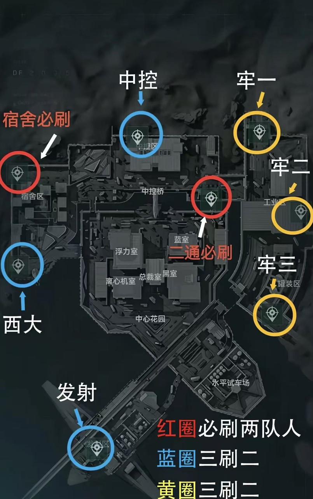
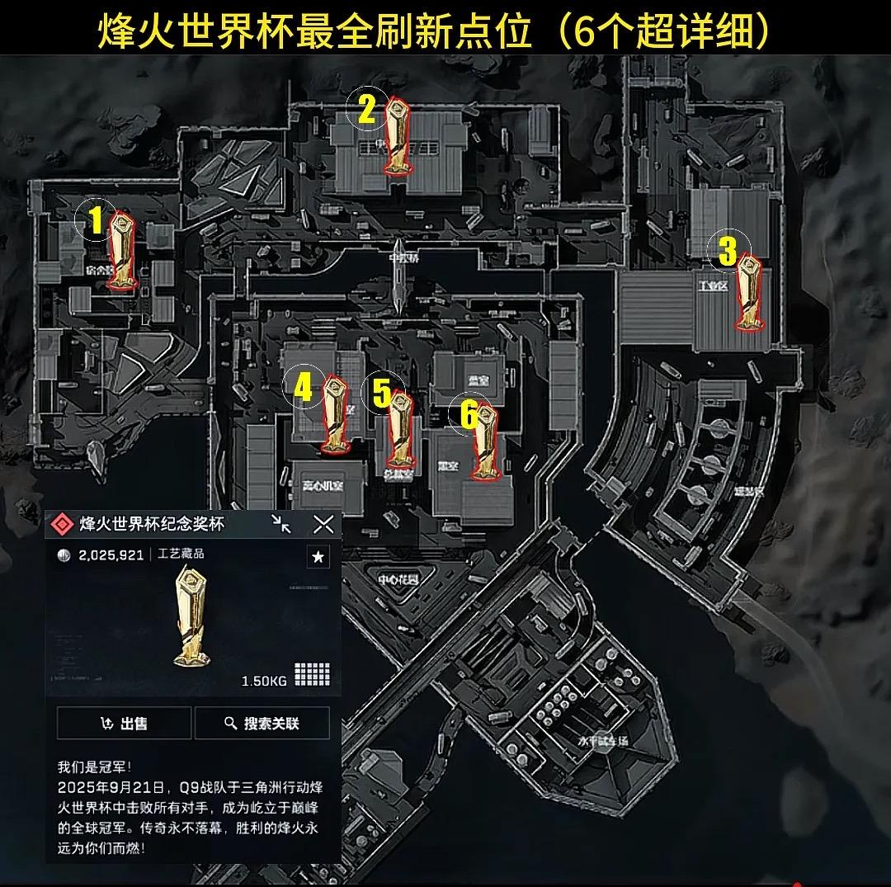
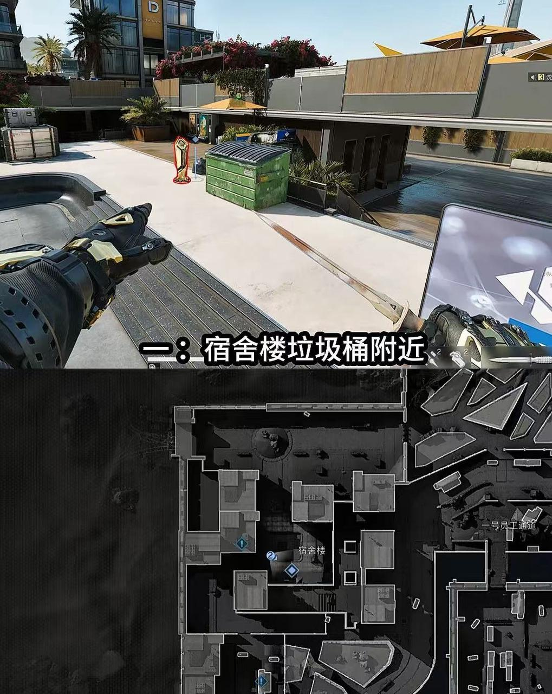
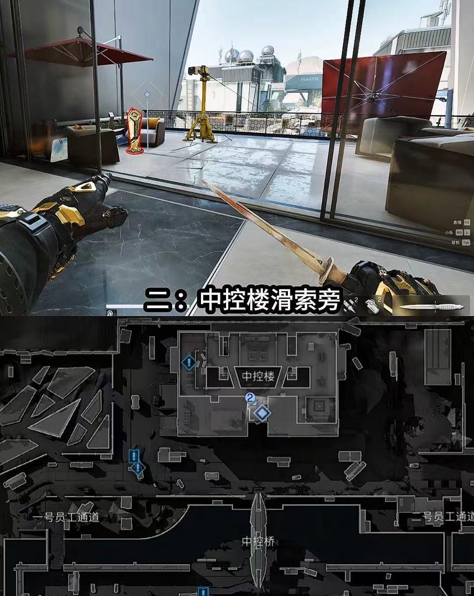
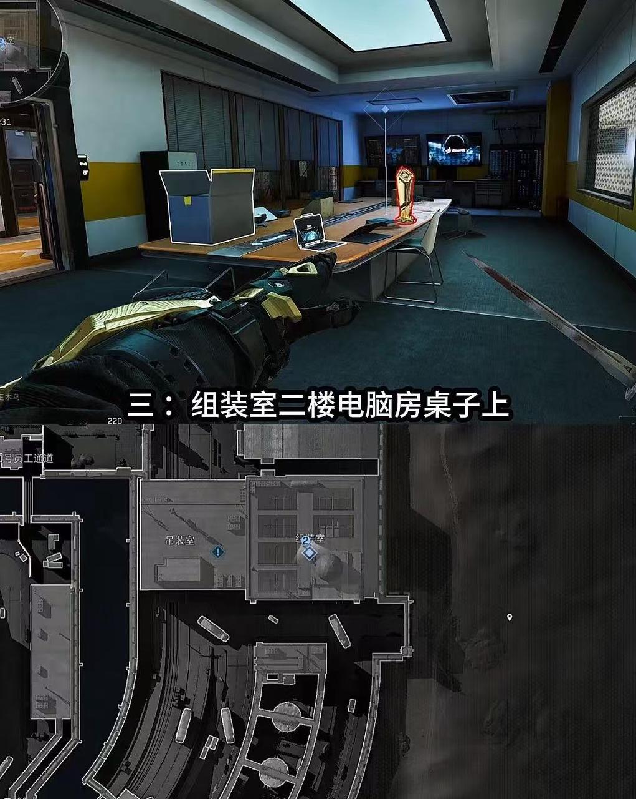
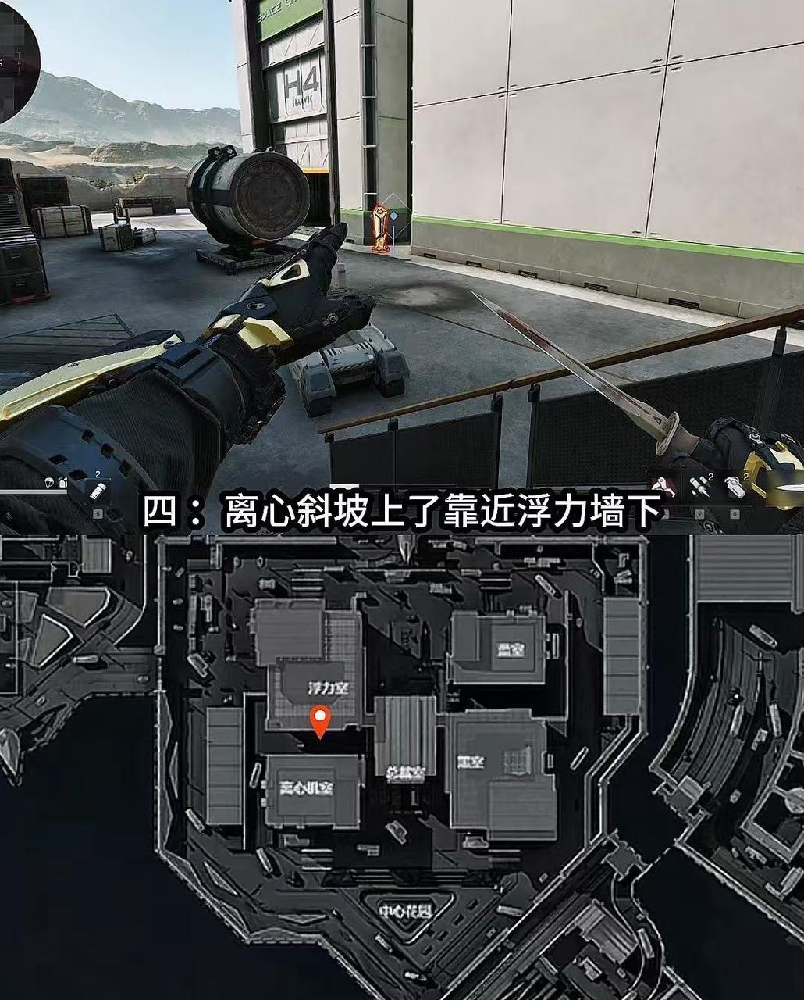

航天基地 跑刀路线分析
三角洲行动 · 攻略
航天一共八个复活位置，其中二员和宿舍必定刷一队，老区至少两队，其他随机。了解复活点分布是制定跑刀路线的第一步。

航天基地飞机撤离点及复活位置总览地图
一员通开局路线详解
开局阶段建议直接刷卡通行，迅速前往黑市免费领取航空箱。之后立即返回蓝室，使用自带的保险箱资源补给。准备就绪后，快速进入黑室并前往上层总裁区，可在此处稳定获取前期重要物资，实现"爽吃"开局。
二中控楼分步攻略
第一步：地面搜查与保险补给
首先留意地面油点刷新情况，并确认一楼是否有"心"类资源生成。之后不要拖延，直接使用保险补充状态。完成补给后，立即借助滑索进入浮力区，优先取得"断头饭"资源。
第二步：三楼搜集与环境判断
保险使用完毕后，可转向浮力区三楼的红色房间搜集物资。结束后务必注意倾听周围脚步声，判断总裁区是否有人。若总裁区暂时安全，可前往搜刮；也可根据西区大门的实时开放情况，灵活选择进入总裁区或离心区继续发育。
三宿舍楼谨慎行动指南
开启一员卡之后，推荐优先前往浮力区收集物资，之后尽快返回宿舍楼内。无需特意确认西大是否已有玩家进入，因为在员通阶段即可观察到西大的开卡状态。
当前赛季中，不少玩家会选择快速突袭宿舍楼，因此强烈建议不要冒险在外逗留，确保自身安全为首要目标。
四西区大门区域战术思路
打法一：离心区速攻
开卡进入离心区后，首先检查闸点附近有无卫星锅与大红资源刷新。随后立即拉闸，并迅速前往二楼使用保险。
若保险后出现大红，28分30秒前发射区玩家通常还未抵达离心区，关键要听脚步辨别。如果没有断桥事件，时间节点可延至28分40秒。
如果听到他人接近，应果断转进浮力区取得"断头饭"，避免正面冲突。
打法二：浮力区上行
开卡后从浮力区直接上行至总裁区，搜集完毕后若状态良好，可携带五级护甲等高级装备从容撤离。
五发射区动向与机会把握
如遇到断桥事件，应首先前往获取断桥相关资源。之后可进入离心区，通过脚步声判断西大方向是否有人前来，或留意西大与宿舍区的动向。
烽火行动杯 & 房卡刷新点
航天一共六个地方刷新烽火行动杯，且爆率较高。掌握刷杯位置，提升收益效率。

烽火行动杯刷新点总览地图
具体位置如下：

位置1：宿舍垃圾桶和凉棚下面

位置2：中控滑索小沙发上

位置3：组织车间二楼电脑桌旁边

位置4：离心和浮力链接二楼（高概率）
位置5：总裁桌上（高概率） — 此处无独立截图，请根据总览地图前往总裁桌区域查找。